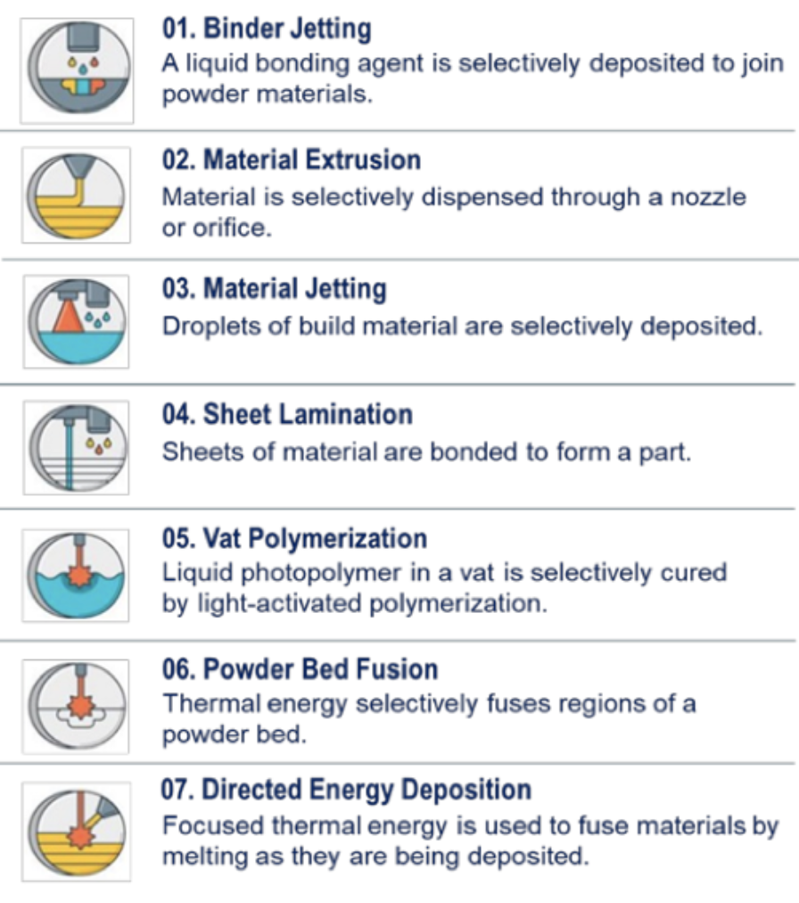

Parts & products printed on demand
Imagine a world where instead of going to your big box hardware store or home decorating store and selecting from stock items, you open up an app, find the item you want, and customize it. You then choose to pick it up in an hour or have a drone fly it to your house from a local shop. It could soon be a reality.
Credit: GSA.gov
Key enablers, through advances in manufacturing technology like 3D printing and autonomous machining centers combined with advanced design software and supply chain and logistics integration solutions, will enable hyper customized and potentially localized products, in low volume/one-offs to be made and delivered within days and eventually hours of an order being placed - at a competitive price. This will include everything from made-to-fit clothing, to specialty hardware, to toys and furniture. Longer term it will also include large-scale goods like cars and houses, and personal robotics.
These developments are happening across all AM technologies:
Seven industry recognized types of additive manufacturing processes. Source: ASTM International.